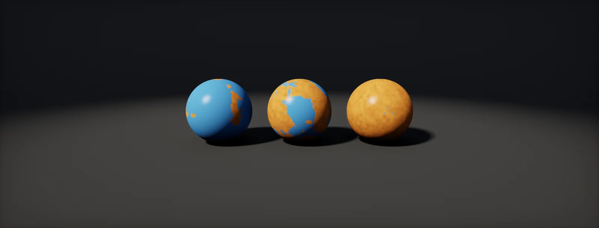

Parameters, Publishing and Export
How a Substance Designer graph leaves Designer: exposing and organising parameters, driving many nodes from one input, outputs and usages, exporting textures with the right formats, colour spaces and normal convention, and publishing SBSARs for Unity and Unreal.

Exposing a parameter
A graph becomes a reusable material when someone else can change it without opening it. That happens through : node settings promoted to inputs of the whole graph.
- Select the node and find the parameter in the Properties panel.
- Click the small menu button next to it and choose Expose as new graph input.
- Fill in the dialog. The identifier is what scripts and engines use (no spaces, never change it once others depend on it); the label is what people see; the group sorts it into a collapsible section (use
/for sub-groups); default, min and max set the slider, and clamp decides whether the limits are hard.
The parameter's name turns blue on the node. All exposed inputs are listed when you select the graph itself (click an empty spot), under Input Parameters, and the Preview tab there shows them as users will see them. Used as an instance in another graph, the graph shows them as its own node parameters.
Expose few, well-named inputs. Twenty sliders called float_3 are harder to use than the graph itself; five called Wear, Dirt, Tint, Roughness and Seed make a material.
Driving many nodes from one input
One user-facing slider usually changes several nodes. "Wear" moves the edge-wear mask, raises dirt, roughens the surface and, past a point, lets rust appear. Each of those node parameters gets a parameter function (the button that appears next to a parameter) whose function graph reads the exposed input with a Get Float node and computes the node's value from it:
The functions are ordinary function graphs: lerps to map 0–1 to a useful range, powers to make a slider feel even, comparisons to switch features on. Keep the mapping inside the graph, so every user of the material gets the same, tested behaviour from one number. Remember the cache: inputs that drive late nodes are cheap to change (where parameters belong).
Groups, Visible If and presets
- Groups keep long lists readable: Base, Wear, Dirt, Advanced. Order inside a group follows the order in the Input Parameters list.
- Visible If hides a parameter unless a condition holds, written as an expression on other inputs, such as
input["use_rust"]. Rust amount and rust colour then appear only when rust is on. - Presets store a whole set of input values under a name (Clean, Worn, Ruined). They travel with the graph into the published SBSAR, so artists in Painter or an engine can start from them.
- Random seed: every graph has one. Leaving it exposed lets users reshuffle every random layout at once; set the graph's random seed attribute to Absolute if it should stay fixed.
Outputs and usages
A graph's results leave through Output nodes. Each has an identifier (used in file names and by engines), a label, a group, and a usage such as baseColor, normal, roughness, metallic, height, ambientOcclusion, emissive or opacity. Usages are how other tools know what an output means: Painter, the engine plugins and Designer's own 3D view connect outputs to material slots by usage, not by name.
The output node's format is what gets written. A height output should be L16 if the chain before it is 16 bit; an output left on the default may quietly reduce it to 8 bits (formats per map).
Engines want maps the graph does not produce directly. HDRP's mask map packs metallic, AO, a detail mask and smoothness into one texture (packing layouts). Build it in the graph: an RGBA Merge node with metallic in R, AO in G, white in B, and inverted roughness in A, into its own output. Then the export needs no extra tool.
Exporting textures
To write files, right-click the graph in the Explorer and choose Export outputs as bitmaps (or Tools > Export Outputs in the Graph view). The dialog has five things to set:
- Destination: the folder.
- Format: one file type for the whole export (PNG, TGA, EXR…).
- Pattern: the file name, built from variables such as
$(graph)and$(identifier), with a preview of the result. - Outputs: which outputs to write, so you can re-export just the one that changed.
- Automatic Export: re-exports whenever the graph changes. Handy while tuning a material in an engine; heavy for large graphs.
Resolution comes from the graph. To export at another size without changing it, use the Batch tab, which overrides the output size (resolution). Choose identifiers and a pattern that your engine's import rules understand:
File formats and bit depth
Because one format applies to the whole export, pick one that can hold every output's format, usually PNG, which stores 8 or 16 bits per channel losslessly. Export 16-bit heights and 8-bit everything else from the same graph, and the PNGs follow each output's format.
| File format | Bits per channel | Use for | Avoid for |
|---|---|---|---|
| PNG | 8 or 16, lossless | Almost everything: colour, masks, normals, 16-bit heights | HDR values above 1 |
| TGA | 8, lossless | Pipelines that expect it; alpha channels | Heights (no 16 bit) |
| TIFF | 8, 16 or 32 float | 16-bit heights for DCC tools, archives | Engines that import it slowly |
| EXR | 16F or 32F | HDR emissive, float displacement, vector maps | Ordinary 0–1 maps (large, no gain) |
| JPEG | 8, lossy | Previews; bitmap resources inside SBSARs | Normals and masks: artefacts become bumps |
Bits on disk are not bits on the GPU. The engine compresses most maps to a block format with its own precision, so a 16-bit base colour costs twice the disk space and arrives at the same quality. The exception is data that stays uncompressed, such as a height map imported as R16:
Colour spaces and normal formats
Two settings decide whether exported maps are read correctly.
Colour space. In the default Legacy mode, outputs offer sRGB, Linear and Raw, and only Linear changes the pixels: it is meant for float HDR images. Base colour stays sRGB, data maps stay raw, and the engine flags them accordingly. In OCIO and ACE modes you assign a real colour space per output in the export dialog, and Designer converts before saving (sRGB and linear in Designer).
Normal format. Tangent-space normal maps come in two conventions that differ only in the green channel. DirectX style (Designer's default, Unreal) points green down; OpenGL style (Unity, Blender) points green up. The Normal node's format setting chooses the convention; a map in the wrong one looks right in a flat preview and lit from the wrong side in the engine:
Either export in the engine's format, or flip green on import (Unity's texture importer has no flip; Unreal has Flip Green Channel). The Substance plugin for Unity converts DirectX normals automatically, which is why Adobe recommends leaving graphs on DirectX when they are used through the plugin.
Publishing an SBSAR
An is a published, compiled package: the graphs, their exposed inputs and presets, and every resource they need, in one stand-alone file. Painter, Stager, Sampler and the engine plugins can render it and change its exposed inputs, but nobody can edit the graph inside. Publish with right-click on the package, Publish .sbsar file.
- The whole package is published. Graphs whose attribute Exposed in SBSAR is No stay hidden helpers.
- Keep graph output sizes Relative to parent, so the user (or engine) sets the resolution.
- Keep Bitmap nodes Absolute, or their images are stored at 256 × 256.
- Archive compression trades file size for publish time; JPEG bitmap resources shrink files further.
In Unity, the Substance 3D for Unity plugin imports an SBSAR into a graph asset with a folder of generated textures and a material for the active pipeline. Inputs and output resolution appear in the Inspector; changing them re-renders the textures. At runtime a SubstanceRuntimeGraph component lets scripts set inputs and render. In Unreal, the Substance plugin creates an instance factory, a graph instance with its textures and a material instance; Blueprints can set inputs and re-render.
Ship an SBSAR when users need its parameters: material libraries, customisation, variation at runtime. Ship exported textures when the look is final: they load faster, compress, need no plugin, and cost nothing to render (rendering at runtime).
Set it up in Designer and Unity HDRP
Both routes out of Designer, end to end. Route A exports textures named for the import rules from Texture Packing and Import Settings, including an HDRP mask map packed inside the graph. Route B publishes an SBSAR with one exposed Wear input and drives it at runtime from a script. Written for Substance 3D Designer 14 and later, Unity 6 with HDRP 17 and the Substance 3D for Unity plugin; menu names can differ slightly between versions.
- In Designer, pick the node that controls edge wear (for example the Histogram Scan on a curvature map). Next to its Position, choose Expose as new graph input: identifier
wear, labelWear, groupWeathering, default 0.3, min 0, max 1, clamp on. - On the other nodes that should follow (dirt Blend opacity, roughness Levels), open the parameter function and read the input: Get Float set to
wear, then the mapping from the first widget (for example Pow 2 for the dirt opacity). Wear now drives everything. - Add an RGBA Merge node: metallic into R, ambient occlusion into G, a white Uniform Color into B, and roughness through Invert Grayscale into A. Connect it to a new Output node with identifier
MSand no colour space conversion (Raw). - Set the other output identifiers to the suffixes your import script knows:
BCbase colour,Nnormal,Hheight (L16 output). Set the Normal node's format toOpenGLfor Unity,DirectXfor Unreal. - Route A: Export outputs as bitmaps, format
png, patternT_$(graph)_$(identifier), destination inside the Unity project'sAssets/Textures. The import script sets sRGB, compression and R16 per suffix; assign the textures to an HDRP/Lit material. - Route B: select the graph and set Exposed in SBSAR to Yes; keep its output size Relative to parent and every Bitmap node Absolute. Right-click the package, Publish .sbsar file.
- In Unity, install the Substance 3D for Unity plugin (Asset Store or Adobe's package), then drag the SBSAR into the Project window. The plugin creates the graph asset, its textures and a material; with the plugin, leave normals on DirectX, it converts them. Set the output resolution in the Inspector.
- For runtime changes, add the plugin's runtime component to the object as the plugin documentation describes, then add
WearController.csand assign theSubstanceRuntimeGraph. Changing Wear sets thewearinput by identifier and requests a render, through the queue from Keeping Graphs Fast when it is in the scene.
using Adobe.Substance.Runtime;
using UnityEngine;
// Drives the exposed 'wear' input of a runtime Substance graph and re-renders it.
// Uses the identifier, not the label: renaming the label in Designer keeps this working.
public class WearController : MonoBehaviour
{
public SubstanceRuntimeGraph graph;
public string inputIdentifier = "wear";
[Range(0f, 1f)] public float wear = 0.3f;
[Tooltip("Smallest change worth a re-render.")]
public float threshold = 0.02f;
float rendered = -1f;
void Start()
{
if (graph == null) { enabled = false; return; }
var desc = graph.GetInputDescription(inputIdentifier); // fails loudly if the identifier changed
Debug.Log($"Driving Substance input '{desc.Identifier}' ({desc.Label})");
Apply();
}
void Update()
{
if (Mathf.Abs(wear - rendered) >= threshold) Apply();
}
void Apply()
{
graph.SetInputFloat(inputIdentifier, wear);
rendered = wear;
var queue = FindAnyObjectByType<SubstanceRenderQueue>(); // optional, from Keeping Graphs Fast
if (queue != null) SubstanceRenderQueue.Request(graph);
else graph.RenderAsync();
}
}The plugin's API is documented on Adobe's Unity scripting page (SetInputFloat, GetInputDescription, RenderAsync); class names have changed between plugin versions, so check the version you install. Remove the queue lines if you do not use SubstanceRenderQueue.
MetallicSmoothness output (RGBA Merge with metallic in R and inverted roughness in A) instead of the HDRP mask map.ORM output (AO in R, roughness in G, metallic in B). Route B: install the Substance 3D plugin for Unreal, import the SBSAR, and set inputs from Blueprint on the graph instance, then render asynchronously.Sources and further reading
The formulas and engine details in this unit come from these references. Engine documentation changes between versions.
- DocsExposing a parameterAdobeIdentifier, label, group, type, default, min, max and clamp.
- DocsVisible if: control visibility of inputs, outputs and parametersAdobeExpressions that show and hide parameters.
- DocsExporting bitmapsAdobeThe export dialog, pattern variables and the Batch tab.
- DocsPublishing Substance 3D asset files (SBSAR)AdobeWhat a package contains, exposed graphs, bitmap sizes, compression.
- DocsColor managementAdobeExport colour spaces in Legacy, OCIO and ACE modes.
- DocsUnity plugin overviewAdobeImporting SBSAR files into Unity and the automatic normal conversion.
- DocsSubstance 3D for Unity scriptingAdobeSubstanceRuntimeGraph, setting inputs and RenderAsync.